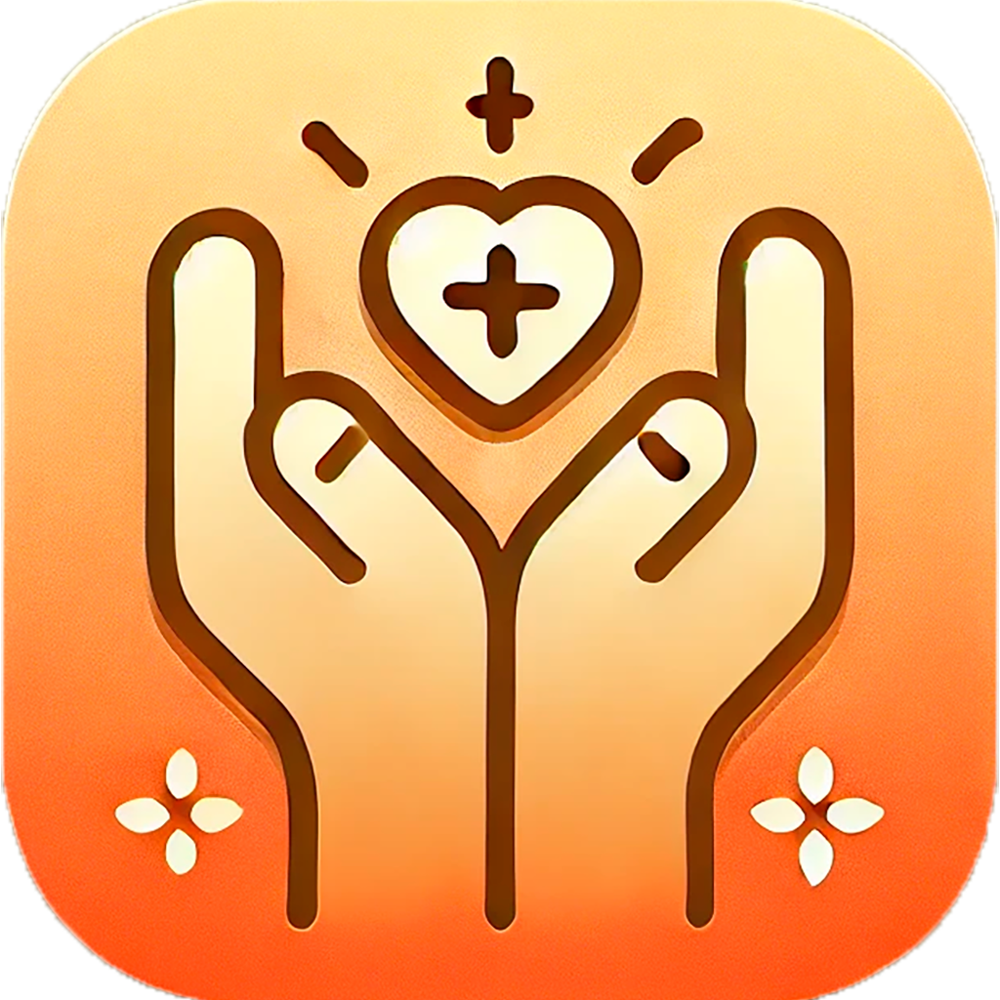

🌟 關於 ASD Care 關懷 🌟
👋 你好！我們是 ASD Care 關懷，一個專注於關愛自閉症人士（ASD）及其家庭的非營利平台。
💙 這個 APP 由一位 ASD 孩子的家長創立，希望透過自身經歷和資源，為更多 ASD 家庭帶來支持、理解和溫暖。
我們深知這條路不容易走，因此希望用實際行動，幫助更多有需要的人。
我們提供的服務：
分享 ASD 相關資訊與實用資源
提供家長與照顧者的支持與交流平台
推廣社會大眾對 ASD 的認識與接納
透過免費服務，讓更多 ASD 人士得到幫助